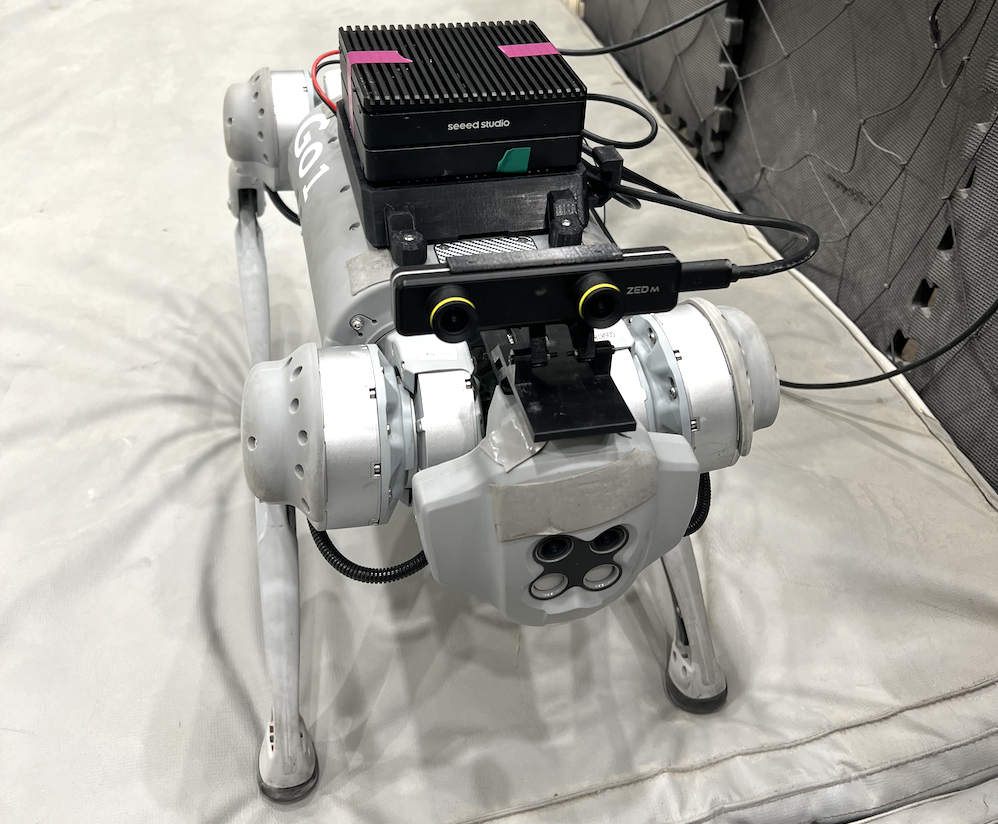
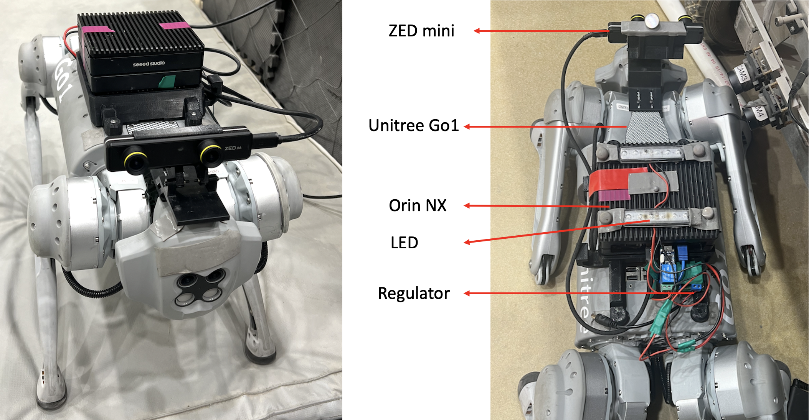

原工作：Agile But Safe (ABS) 提出了一套让四足机器人在杂乱环境中 高速移动同时避免碰撞的学习方法，核心是一个敏捷策略与一个恢复策略的协同， 以及基于可达性的安全机制。
本复现范围：本项目在 Isaac Gym 中完成策略训练，并将策略部署到 Unitree Go2 + RealSense D435 实机上验证。下图为系统总览：
（填）复现到什么程度，和原文指标对比，差距和可能原因。
复现页引用的是原论文，不要改成自己：
@inproceedings{he2024agile,
title = {Agile But Safe: Learning Collision-Free High-Speed Legged Locomotion},
author = {He, Tairan and Zhang, Chong and Xiao, Wenli and He, Guanqi
and Liu, Changliu and Shi, Guanya},
booktitle = {Robotics: Science and Systems (RSS)},
year = {2024}
}